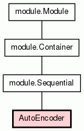

Class AutoEncoder
source code

An AutoEncoder is a neural network whichs aims at encoding
its inputs in a smaller representation space. It is made of
a projection layer and a backprojection layer. The compressed
representation (or hidden representation) lies in the projection
layer, while the backprojection layer reconstructs the original inputs.
The weights between those two layers are shared, that means
that the backprojection matrix is constrained to be the transpose
of the projection matrix. However, the two biases are independant.
If the data allows it, the AutoEncoder is best learned with a Sigmoid
final activation module in conjunction with a CrossEntropy criterion.
__init__(self,
nInputs,
nHidden,
outputActivation=<class crino.module.Sigmoid at 0x3d31530>)
(Constructor)
| source code
|
Constructs a new AutoEncoder network.
- Parameters:
nInputs (int) - The inputs size.nHidden (int) - The size of the hidden representation.outputActivation (class derived from Activation) - The type of activation for the backprojection layer. - Overrides:
module.Module.__init__
Attention:
outputActivation parameter is not an instance but a class.
|
Returns the hidden representation for a given input.
- Parameters:
x_input (ndarray) - The input on which the hidden representation must be computed. - Returns:
- the corresponding hidden representation
|